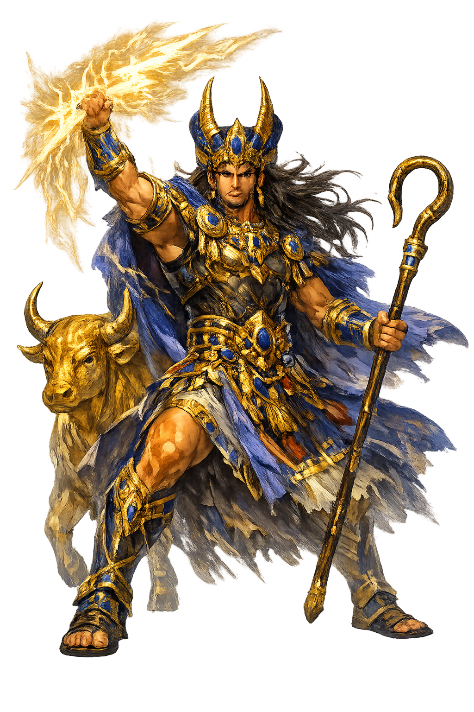

The Authentic Orthography
Storm God, Lord of the Heavens · Canaanite storm and fertility god; the title "Lord" (baʿlu) was also applied to local deities

Unicode restoration and ASCII comparison
𐎁𐎓𐎍
The name in its original Canaanite form. Baꜥal (𐎁𐎓𐎍) is attested in the source tradition — “Canaanite storm and fertility god; the title "Lord" (baʿlu) was also applied to local deities”. Its Egyptological ain and alef letters carry the full phonetic and orthographic weight of the source tradition.
baal
Reduced to plain baal, the name loses everything that made it specific: Egyptological ain and alef letters. What remains is an ASCII string that machines can parse but that no longer speaks with its original voice.
Baꜥal
The Unicode restoration recovers what ASCII flattened. Baꜥal restores Egyptological ain and alef letters, returning the name to its original written dignity. The domain encodes to Punycode, but the browser displays the truth.
Baꜥal.com → xn--baal-re8o.com
The non-ASCII characters in Baꜥal are encoded while the ASCII remains visible. To the DNS, it is Punycode. To humanity, it is Baꜥal.
How Baꜥal travels from ancient script to the modern URL
Ugaritic bʿl simply means “lord, master"; as a divine title it was applied to the storm-god Hadad and to local manifestations of deity.
Storm God, Lord of the Heavens
The Unicode restoration Baꜥal uses registrable Latin diacritics; the Ugaritic form is not registrable in .com.
How Baꜥal was spoken
Storm, Fertility, and Divine Kingship
Baꜥal is the storm made king. In a land where rain is life and drought is death, he is the deity who rides the clouds, shatters the sea-monster, and opens his palace windows so that the rains may fall. He is young, vigorous, and hungry for a throne — yet even his kingship depends on the older god Ēl. The Baꜥal Cycle is the great myth of his rise, death, and return.
His voice is thunder, his weapon lightning; he gathers clouds, wind, and rain around his chariot.
His cedar palace stands on the mountain of the north, the axis mundi from which he governs the cosmos.
When he lives, bread, wine, and oil abound; when he descends to Mot, the land withers.
He defeats Yamm, the primordial Sea, and shatters the seven-headed serpent Lotan.
Stories of Baꜥal
The Ugaritic Baꜥal Cycle (KTU 1.1–1.6) is the central myth of Canaanite religion. It tells how Baꜥal wins kingship from the chaotic Sea, builds his palace, confronts Death, and returns to bring back the rains. The cycle is a seasonal drama of drought and renewal, but also a political statement about divine legitimacy.
Ēl grants kingship to Yamm, the Sea, who sends messengers demanding that Baꜥal be delivered as a slave. Baꜥal refuses. The craftsman god Kothar-wa-Ḫasīs forges two clubs, Yagrush ('Chaser') and Ayamur ('Driver'). With them Baꜥal strikes Yamm on the skull and scatters the chaotic waters, claiming the throne for himself (KTU 1.2 iv).
Victorious, Baꜥal still has no palace. He sends ꜥAnat to petition Ēl, but it is Asherah who finally secures permission. Kothar-wa-Ḫasīs builds a cedar palace on Mount Zaphon. Baꜥal hesitates over a window — it will let his voice out, but it may also let Death in. He opens it, and his thunder resounds across the earth (KTU 1.3–1.4).
Death, personified as Mot, invites Baꜥal to the underworld. Baꜥal descends with his clouds, winds, and rains; the earth dries up. His sisters ꜥAnat and Aštart mourn him, and ꜥAnat destroys Mot, scattering his body like seed. Baꜥal returns, the rains resume, and fertility is restored (KTU 1.5–1.6).
A ritual prayer from Ugarit (KTU 1.119) invokes Baꜥal to drive the enemy from the city gates and walls. Votive anchors from his temple show his importance to seafarers; having conquered Yamm, he protects those who sail the waters he once defeated.
Baꜥal is the god of the necessary storm. He does not create the world; he saves it from chaos, builds a house for his voice, and dies so that the cycle of rain may continue. His mythology is not about transcendence but about recurrence — the eternal return of the waters that make civilization possible.
Enter Extended Lore